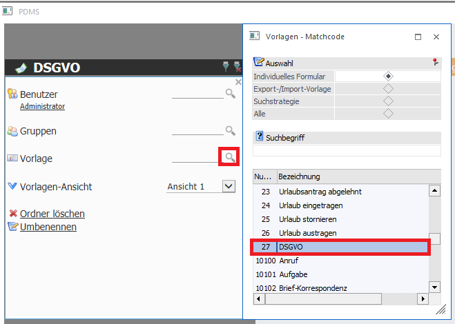
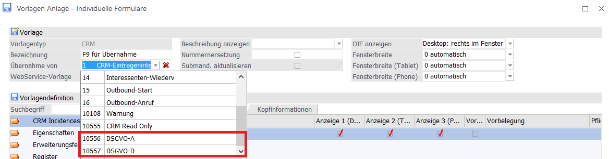
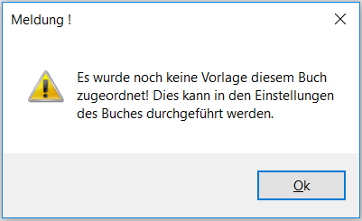
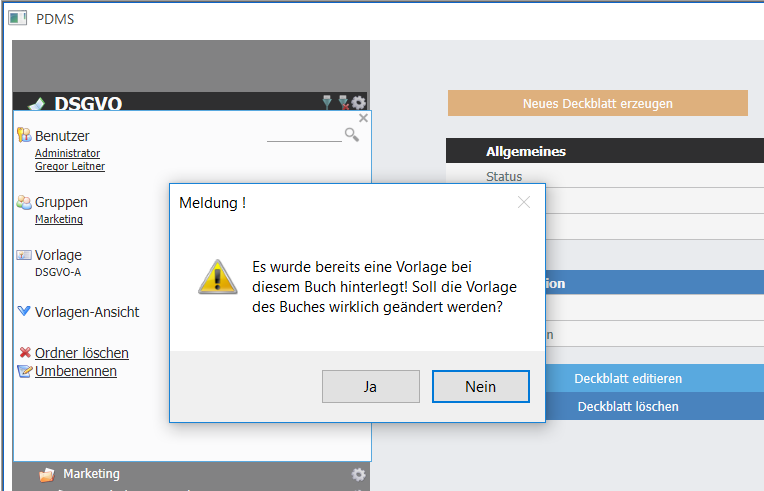

Wie die Deckblätter aufgebaut sind, wird über die Vorlage definiert. Pro Buch kann eine Vorlage hinterlegt werden. Diese Vorlage gilt dann für das gesamte Buch sowie dessen Kapitel und Sub-Kapitel. Mittels Matchcode kann aus allen CRM Vorlagen gewählt werden.

Die Vorlage muss alle Felder enthalten, die in den Deckblättern der Bücher enthalten sein sollen. Änderungen in der Vorlage selbst können im Menüpunkt "Vorlagen Anlage" durchgeführt werden.
Hinweis
Eine Standardvorlage für DSGVO ist sowohl für Österreich als auch Deutschland verfügbar. Diese kann für die Erfassung des DSGVO Buchs auf eigene Gefahr herangezogen werden.
Diese Vorlagen können auch für die Erstellung einer eigenen angepassten Vorlage herangezogen werden, indem bei einer Neuanlage der Vorlage von den Standardvorlagen übernommen wird.

Wird bei der Anlage eines Buchs keine Vorlage ausgewählt, so erfolgt eine Meldung, sobald man das erste Deckblatt erfassen möchte:

Hinweis
Vorlagen können auch nachträglich noch gewechselt werden. Bitte dabei beachten, dass nur jene Informationen aus bereits erfassten Deckblättern übernommen werden können, die sich in beiden Vorlagen befinden. Daten aus Felder die in der neuen Vorlage nicht vorhanden sind werden auch nicht übernommen!
Eine Meldung weißt vor dem Wechsel darauf hin, wenn es bereits mit einer Vorlage erfasste Deckblätter gibt, bevor die neue Vorlage übernommen wird. Mittels "Nein" kann der Vorgang noch abgebrochen werden.
